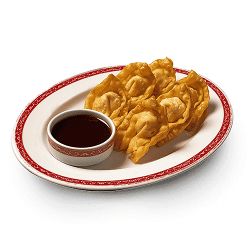
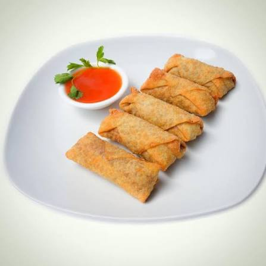
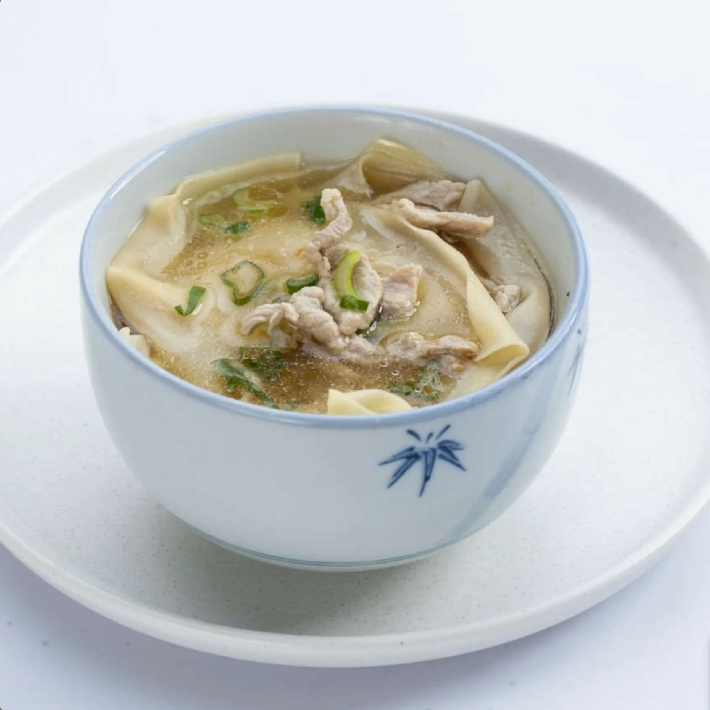
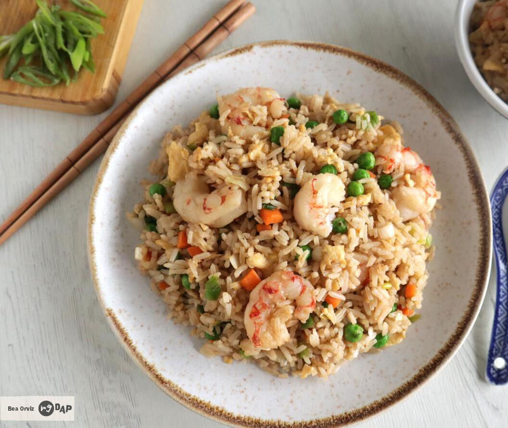
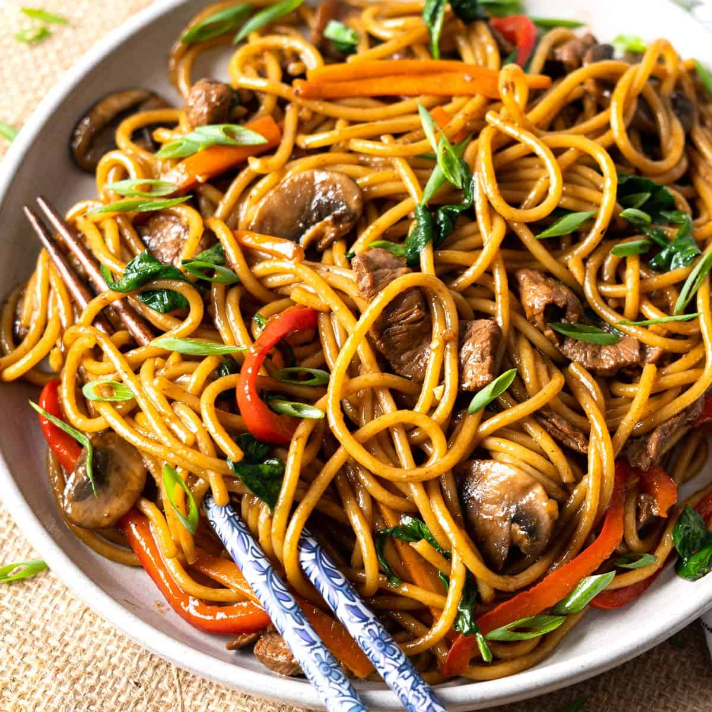
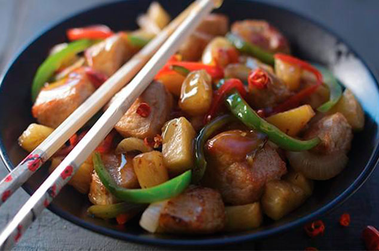
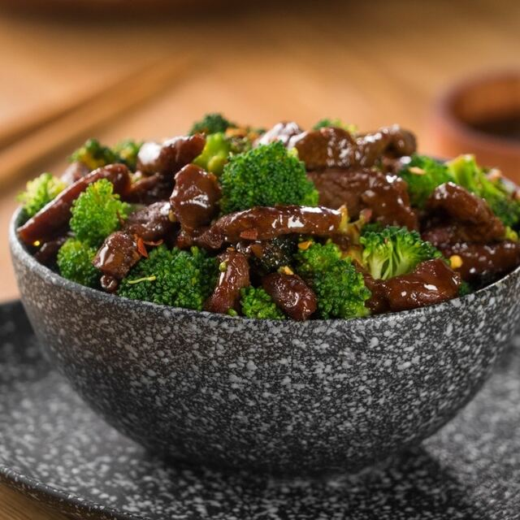
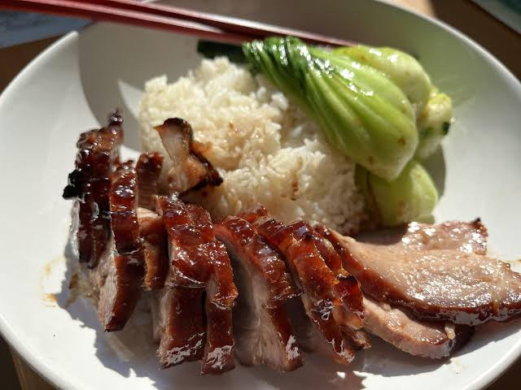
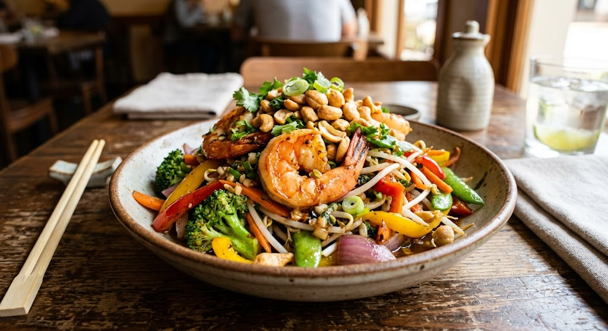

Wantán Dorado (10 uds)
Crujientes y doradas bolsitas de masa delgada rellenas de lomito sazonado, acompañadas de nuestra tradicional salsa agridulce casera. Perfectas para compartir.

Tacos Chinos de Pollo (4 uds)
Rollitos crujientes rellenos de una mezcla fresca de repollo, zanahoria, apio y pollo desmenuzado, sazonados al wok con un toque de cinco especias.

Sopa Wantán Especial
Un reconfortante caldo claro de gallina con wantanes artesanales rellenos de camarón, acompañados de hojas de lechuga fresca, cebollín y un toque de aceite de sésamo.

Arroz Frito Mixto
Clásico arroz salteado al wok a fuego alto con lascas de lomito, pollo y camarones jugosos, mezclado con huevo, cebollín, raíces chinas y nuestra salsa de soya especial.

Chao Mein de Lomito
Fideos de trigo tradicionales salteados con tiras de tierno lomito de res, acompañados de una mezcla crujiente de verduras frescas de la época (repollo, zanahoria, apio y pacaya opcional).

Pollo a la Naranja
Bocadillos de pechuga de pollo empanizados a la perfección y bañados en una salsa cítrica y dulce de naranja natural, espolvoreados con semillas de sésamo.

Cerdo Dorado en Salsa Agridulce
Tradicionales trozos de carne de cerdo crujientes por fuera y suaves por dentro, salteados con chile pimiento, cebolla, apio y piña, todo bañado en nuestra salsa agridulce de la casa.

Lomito con Brócoli y Ostras
Jugosas lascas de lomito de res salteadas al wok con floretes de brócoli fresco, cebolla y zanahoria, envueltas en una sabrosa y brillante salsa de ostras.

Cha Siu (Cerdo Asado)
Deliciosas rodajas de carne de cerdo marinadas en una mezcla de miel, cinco especias y salsa hoisin, asadas al horno hasta quedar caramelizadas. Servido con una guarnición de arroz blanco.

Camarones con Marañón
Camarones gigantes salteados con vegetales mixtos de la época, raíces chinas y un toque de ajo, coronados con crujientes semillas de marañón tostadas.